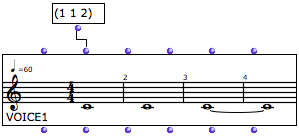
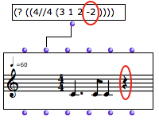
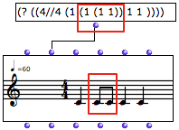
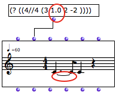
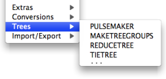

Notation : in Practice
Proportions
 | Rhythm trees can also be expressed with simple proportion lists, which ignore the duration and time signature levels. At a basic level, OM always interprets proportions according to two criteria :
|
This way of writing rhythm trees can lead to very interesting processes in the manipulation of temporality. A given rhythmic structure can be modified or read according to various beats patterns, by associating given proportions to more or less sophisticated functions or programs.
Proportions can be expressed with integers, floats or ratios. Nevertheless :
- A same group cannot take both floats and ratios.
- Values between 0 and 1 are not accepted by rhythm trees.
In both cases, OM renders an approximation of the rhythm tree.
The mktree function allows to associate a list of proportions to a list of time signatures.
- If a list contains a single time signature, the rhythmic pattern is extended as much as required by the duration of the tree.
- If a list contains several time signatures, each time signature is valid for one measure only, so that the rhythm may remain incomplete.
Rests, Beams and Ties
Silences are expressed by negative values. |  |
 | Values within a group are beamed automatically. |
Add .0 to create a tie with the previous note. |  |
Dotted Values
Dotted values are "naturally" expressed by relevant proportions, in the case of "binary" time signatures – n/ 4, n/ 2, n/1 –, or elementary ternary time signatures – 3/8, 3/16.
In other cases – 6/8 and its paradigm –, OM's behaviour doesn't always apply the conventions of traditional notation. Proportions can be expressed with different but equivalent rhythmic notations, depending on the values used in rhythm trees.
- The quarter note being the default beat value, ternary notation is adapted to the use of the quarter note and its multiples. In other words, OM privileges the use of tuplets, rather than that of dotted values.
- To get dotted values in a ternary time signature, use multiples of 3 to express proportions.
Functions of the Rhythm Trees Package
 | A set of functions dedicated to rhythm tree is available in the |